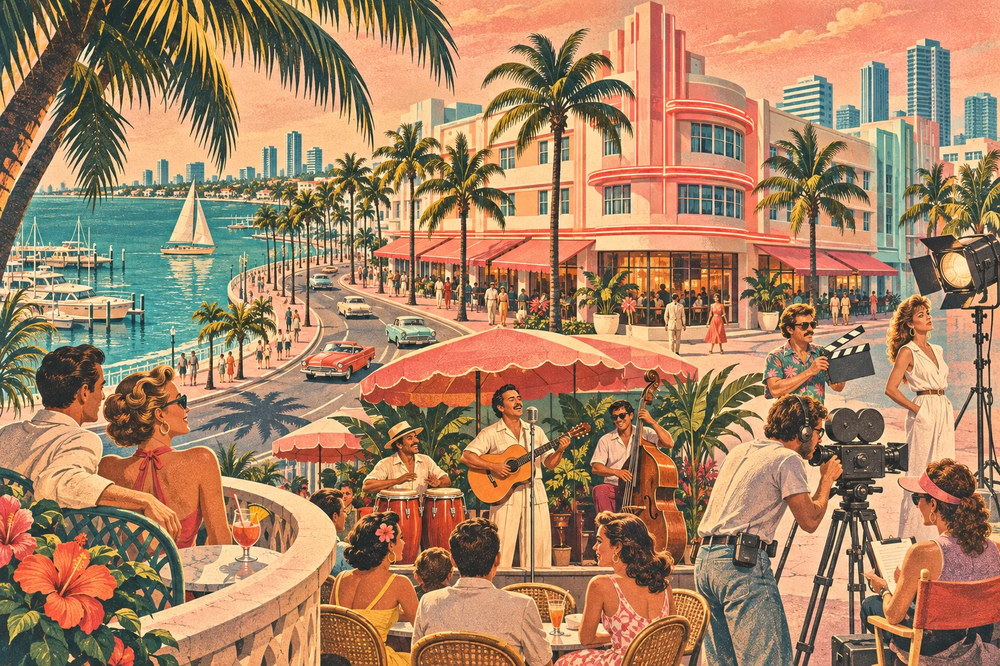

Leonida · 双语场景图鉴
GTA VI
Walk the waterfront. Meet the people behind the music and the movies.
从海滨街区出发，认识音乐与镜头背后的人。
选择一款游戏，跟着场景学英语。

Leonida · 双语场景图鉴
Walk the waterfront. Meet the people behind the music and the movies.
从海滨街区出发，认识音乐与镜头背后的人。